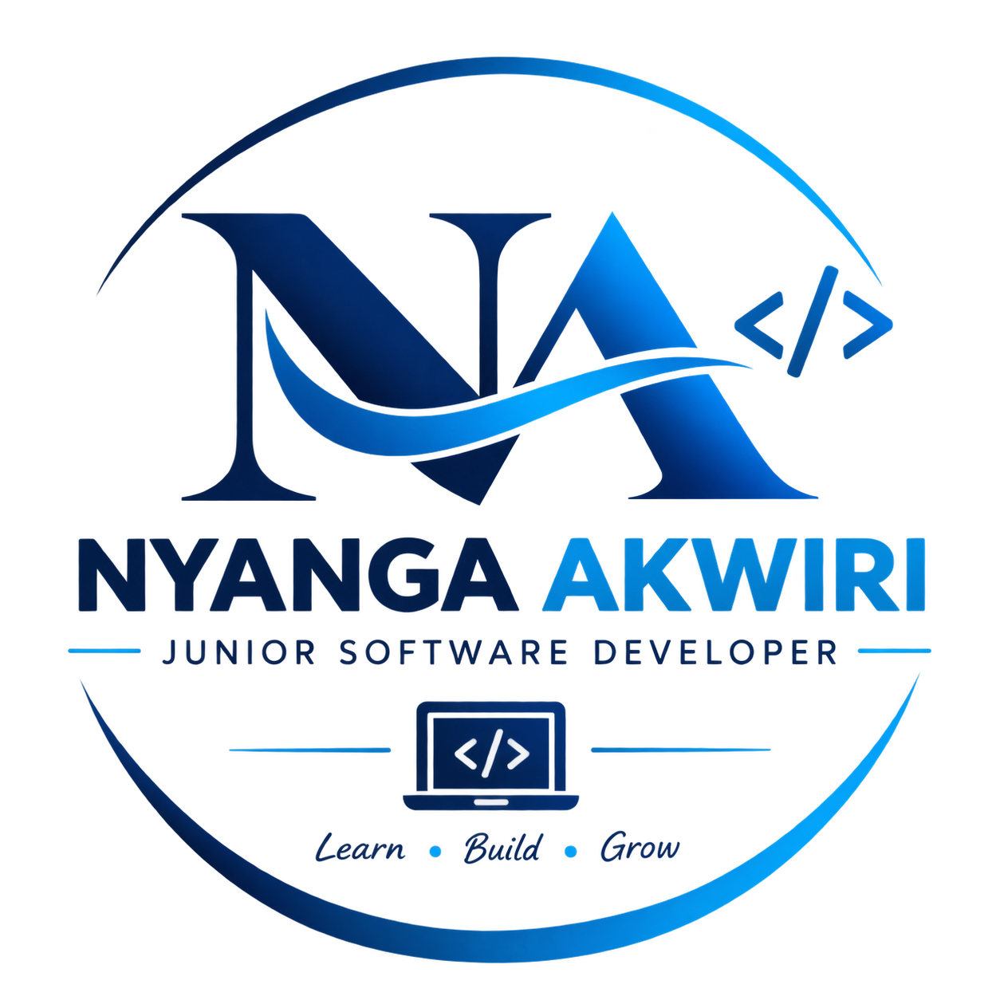

Tobias Nyanga Akwiri
WELCOME TO MY WEBSITE
Surveyor | Junior developer | Community Leader
I am a surveyor, specializing in roads survey with a Diploma in Information Technology. Currently developing my skills in software development. I am passionate about combining surveying, technology, and programming to create practical solutions to real-world challenges.
Get In TouchAbout me
Hello, I am a Surveyor working in construction industry, roads projects and a Junior Software Developer with a Diploma in Information Technology. I have a strong interest in combining surveying, technology, and software development to solve real-world problems. My experience in surveying has developed my skills in measurements, mapping, data collection, accuracy, and problem-solving, while my IT background has given me a foundation in technology and digital systems.
I am currently expanding my skills in software development at Moringa school, with a focus on building practical and user-friendly digital solutions. I am passionate about learning, innovation, and using technology to make work more efficient and accessible.
My Skills
Leadership
I am a responsible and motivated leader who believes in taking initiative, making informed decisions, and guiding others toward achieving common goals. I strive to lead by example, remain accountable for my responsibilities, and approach challenges with confidence and a positive mindset.
My key leadership skills include:
- Decision-Making – Making thoughtful and responsible decisions based on available information.
- Taking Initiative – Identifying opportunities and taking action without always waiting to be directed.
- Problem-Solving – Approaching challenges logically and finding practical solutions.
- Accountability – Taking responsibility for my actions, decisions, and results.
- Adaptability – Remaining flexible and effective when circumstances change.
- Motivation – Encouraging and inspiring others toward achieving objectives.
- Strategic Thinking – Looking at the bigger picture and planning effectively to achieve goals.
- Confidence – Taking responsibility and making decisions with professionalism.
- Continuous Improvement – Learning from experiences and seeking ways to become a better leader
Project Management
I have an interest in planning, organizing, coordinating, and monitoring projects to ensure that objectives are achieved efficiently. My background in surveying and Information Technology has helped me develop a structured approach to managing tasks, working with deadlines, solving challenges, and maintaining attention to detail.
Key project management skills:
- Planning & Organization – Setting clear objectives and organizing activities to achieve them.
- Management – Prioritizing tasks and working effectively within deadlines.
- Task Coordination – Organizing project activities and ensuring responsibilities are clearly understood.
Communication
I am an effective communicator who values clarity, active listening, and respectful interaction. I am able to express ideas clearly, listen to different perspectives, and adapt my communication style to different situations. I believe good communication is essential for building understanding, sharing information, and achieving positive results.
Team Work
I work well with others and understand the importance of cooperation, mutual respect, and shared responsibility in achieving common goals. I value different ideas and perspectives and contribute positively to group activities while maintaining a professional and supportive attitude.
My Projects
Calculator
Next i will be working on creating a calcultor using html, CSS and Javascript as part of summative lab.
Learn More
Contact Me
I'd love to hear from you.
📧 Email: tobias.akwiri@student.moringaschool.com
📱 Phone: +254 725 880 796/+254 738 006 353
📍 Location: Eldoret, Kenya